Lambeth Palace Library, MS MS 491, Part I ()
here bygynnitħ þe sege of Ierusalem .
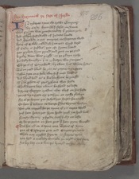IN tyberies tyme | the trewe Emperour
Sir Cesar hym-self | sesid in Rome
whil Pylate was prouoste | vndar þat prince riche
4And Iwyn hey Iustise | also of Iudees londe
And herowde in þat empire . as heritage wold
Kyng of Galile callid | whan þat Cryst deyd
If Cesar is sakles | þat oft synne hatid
8þan Pylate hym pynid | and put on þe rood
A piler doun was pigħt | on þe playn erthe
his body boundyn þer-to | & betyn wiþ scourgis
whippis of Quyreboiłł | by-went his white sydis
12Tul on reed blood he ran | as rayne in þe strete
Sethin sette on a stole | wiþ stif men hondis
And blynd-feld as a bee | buffetis he raugħt
If þou be prophete of pris | prophecie they seyde
16whicħ bierne here a-bout | buffetid þe laste
A strong thornyn crowne | they thrist on his hede
þei cast vp a grete cry . þat hym on crosse slowyn
For al þe harme þat he had | ӡet hastid he nogħt
20On hem þat vilany to venge | þat his veynes brostyn
But euere tarieth he þe tyme | if þei turne wold
yaf hem space þat hym spilt | þogħ hit sped litil
Fourty wyntir y fynde | feithfully no lesse
24Or he þe prince on hem put | þat hem pyne wrogħt
¶ Tul hit tid on a tyme one Tytus of Rome
þat al Gascoigne gate and Guyene þe noble
while noy nyghid hym to . in Neroes tyme
28þat had a malady vnmeke yn myddis his face
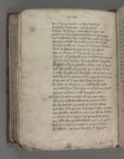As a kancre vnclene enclynid hid had
his fadir vaspaӡian a ferly bytid
32A byker of waspis & bees bred in his nase
hyvid vp in his heed he had hem in his youþe
And vaspasian was callid by-cause of þe waspis
was þere no leche vp-on lyf þes lordis to hele
36Ne gras growyng on ground þat gaynid her sores
was no sikenes so sore þat eny sire tholid
For on a lepre he lay ӡet þer-to in Rome
For out of Galys he come to glade hym a stound
40Of þat kytħ he was kyng þogħ he care þolid
Now was þer one Nathan Naym son of Grece
þat oft sogħt ouer þe see from Citee til oþere
knewe kyngdomes ful fele and cuntres many
44And was a Mariner mycħ & marchaunt y-fere
Systynes of Surrie sent hym to Rome
To Nero þe Emperour in message of Iewis
þei callid hym Nero by name þat hem noy wrogħt
48Of his tribute to telle þat þei pay nolde
¶ This Nathan to Nero toke þe next way
Of þe grekissh see wiþ þe grymme wawes
On hy sette þei þe sayle on þe salt watir
52And wiþ a dromunde in þe depe drivyn on swiþe
þan walkyn wawis a-none & þe watir flowis
þe cloudis al to-clatrid as þei to-cleve wolde
þe rakke wiþ þe reed wynde roos in þe myddis
56And sone sette on þe see on þe soutħ syde
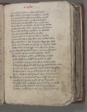Natan Naymes sone on the nortħ dryves
So the wedir and þe wynd an þe watir walkys
60þat al hit hurlid on hepe þat þe helme yemyd
And sone sette on þe see on the southe syde
And Nathan for fere flw vndur þe hacches
lete þe wynd & þe wawis wurche as þei wolde
64þe Ship share vp a-shore & shete from-ward Rome
vp-on costis vnkouþe caried hem þe wawes
þan ropis ful radly racyd on sundre
þe brode sayle at a Brayd brast yn sundur
68þe tone ende of þe ship was euere to-ward hevyn
The tothir doun in the depe drenche as hit shold
with mycħ langour at þe last as our lord wold
Al was born at a brayde in-to Burdeux havyn
72¶ þan were þere on bank barons & meny oþer biernes
þe citezeins of þe cite selcouthe hem thogħt
That euere barge or bote or body vp-on lyve
Passid hath vnperisshid þe perils so thik
76þei toke hem to Tytus for he þe tonge couthe
And he hem fraynyd how ferre þe flood had hem bore
Sir out of Surye þei sayd saylid have we swiþe
To Neroo sent am y now seignour of Rome
80From Systieus his seruaunt wiþ certein lettres
¶ The kyng in-to counceiłł þan callid hym sone
Canst þou quod he . eny crafte of curis on erthe
To softyn this ginly sore þat sittitħ on my cheke
84I wil þe radly rewarde and to Rome sende
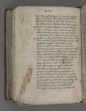But were þow knowyn in þat court þer as crist dyed
Ther is a worthy wyf a woman ful clene
88That hath a softyng salve for euery sore on erþe
To softe þis grymly sore that sittiþ on my cheke
¶ Telle me titely quod Tytus & þe shal tide þe betere
what medicyne most is þat þat may vsitħ
92wheþer gummys or grasse or eny good drynkis
Enchauntementis or charmes y charge þe to sayne
¶ Nogħt one qf þo quod Nathan but now y wol þe tełł
þer was a lord in our lande while he lyve mygħt
96Provid for a profete in dedis wele praysid
Born in Bedlem vs by of a bierd shene
And she vnmarrid a mayde þat neuere man touchid
But as clene as þe cliff þere cristałł springitħ
100wiþ-out husbondis help but of þe holy goost
A kyng and a knave child conceyvid at here ere
A trouthe of þe Trinite touch ??? had
Thre personys in o place previd ?? gidirs
104And eche a greyn is o god & o god is ałł
And ałł are o god as eldris vs tellyn
þe first is þe fadir þat fourmyd was neuere
þe sone is þe seconde of his syde growyn
108þe thrid is in hevyn wiþ hem þe holy goost
Neiþer markid ne makid but evyn from hem passid
Ałł Are þei endeles and al of o mygħt
As sone was þe sone as þe self fadir
112
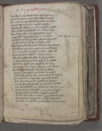And werin or þe world was euere by-gonne
þe seconde persone þe sone sent was to erthe
To cacche mannys kynde of a clene maydyn
116So vnknowyn he come caytifs to helyn
And wrogħt wondris y-now tul he wo suffrid
wyn of watir he wrogħt at o word evyn
Ten lazers wiþ o loke he helid at onys
120þe pynyd in þe palsy he put in-to hele
And dede men fro þe deþe eche day he reisid
Crokyd and cancrid he curid hem alle
The defe and þe doumbe wiþ his dere wordis
124And ded of myraclis mo þan y in mynd have
þer is no countour ne clerk can hem rekyn alle
Fyve thousand of folk is ferly to here
wiþ two fisshes he fed & v. barly loves
128þat eche freke had his fiłł & firþer ouere lyvid
Of battis & broke mete baskettis ful xij .
þer suyd hym of o suyte sevynty and tweyne
To done as he demyd disciplis y-chosyn
132þat he to citees sente his sawes to preche
Euere by two and by two tul þei were ałł disseueryd
hym suyd of an-oþer sort semelicħ twelue
Pore men not proude apostlis þei hightin
136þat of cheytifs he ches his chirche to fulfiłł
þat wyde walkid in þe world þes wer her namys
Petir Iamys and Ioħn & Iacob þe ferthe
þe fift of her felawrede Philip he higħt
140þe Sixt Symond is callid & þe seveneþe aftir
Bartholomew þat his bone neuere breke nolde
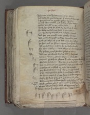Thomas and Thadee her is . x . evyn
144And Andrew þe elleveneþe þat auntrid hym oft
A-for princes to preche Petris brothir
þe last was vnlele and lithir of his dedis
Iudas þat Iesus to þe iewis solde
148Seth hym-self he slow for sorow of þat dede
his body on bale tre brast in þe myddis
þan Crist heried hełł and to hevyn turnyd
And for þat Mansid man Mathy heches
152And ӡet vnbaptisid are boþe barnabe & poul
Now y-knowyn of Crist but come sone aftir
þe prince and þe prelatis a-yens hym spak þat tyme
Ałł þei had hym in hate for his holy werkis
156hit was a dolerous dede whan þei his deþe castin
By Pilate pynyd he was provost of Rome
And þan þis worthi wyf of whom y ferst told
hath his vys in a vayle veronica she higħt
160Peyntid privily in pleyne þat neuere a poynt wantid
For love he left his wiþ her in-to her lyvis ende
þer is no gome on þis ground þat is so grym woundyd
Meselrie ne meschef on man vp-on erthe
164þat knelith doun to þat cloþ & on crist levitħ
þat he ne happith be hole in an hande-while
At Rome regnith quod þe kyng þe riche emperour
Sesar hym-self þe synful þat sette is in rome
168why nero his lykham helid or he be lokyn vndur erþe
whan Pilate provost was made þat sucħ prins slowe
Or þes wordis were wele warpyn to þe ende
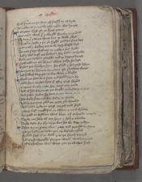 172with-oute faute on þe face of flessh or of hyde
As newe as a nedle þat neuere was hurte
¶ A Curteys Crist quod þe kyng þanne
was neuere work þat y wrogħt worthy to þi wiłł
176Ne dede þat y done haue but þi dethe rwyd
Ne neuere sawe y þe in sigħt goddis sone dere
But now y bowne me to be bysy blessid lord
To note Nero with noy to newyn his sorwe
180And y wil busk me be boun her balis to brewe
To do þes develis a-dawe and þi deþe a-venge
¶ Now telle me quod Titus what tokyn he laft
To hem þat knewyn hym for Crist & his craft levyn
184¶ Nempne þe Trinite by name quod Nathan thries
And þer-with baptisid be wiþ watir y-blessid
¶ Forth þei fette þere a fatte and fullid hym þere
Made hym Cristyn kyng þat aftir Crist servid
188Currours in euery coste her cours þan made
And al his baronage þei brogħt to burdeux in haste
And sithin sondis he sente a-none vn-to rome
The ferly faire cure his fadir to shewe
192And he gronyng glad þe grete god thankid
And lowd cride on Crist carpid and seyd
Mercy lord mygħtful in whom y now byleve
As þow in bedlem was born of a bright mayde
196Sende me help of my hurt & hyly y avowe
To be dede for thy deþe but hit be dere ӡoldyn
¶ That tyme Petir was pope and prechid in Rome
Of þe lord & þe lawe þat our byleve askith
200Fullid fast of þe folk & to þe feith turnyd
And Crist wrogħt for þat wigħt wondris y-now
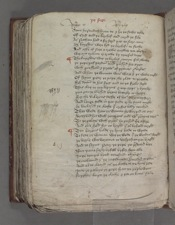Sone he sendith hym to & he þe sothe tolde
204Of Crist and þe kerchif and curid þe sike
As Nathan had a-for seyd þat to Nero come
xx knygħtis were kyd þe kerchifs to fecche
And aske of Nero a trewe answer þei abydyn
208wiþ-out tribute or trowe by teneful dayes
¶ The knyghtis wiþ þe kerchef comyn ful swithe
þe pope yaf pardon and passid hit ayen
with processioun & prees of princes & dukes
212And whan þe woman was ware þat þe wede augħt
Of seynt Petir þe pope she plat to þe erthe
Fel doun to his feet and to þe freke seyd
This cloþ to my kepyng & my corps y bytake
216þan gan þe blessid berne bittirly to wepe
For the dolerous dethe of his dere maystir
And longe stode in þat stede or he stynt mygħt
he vnclosid þe clothe þat cristis body touchid
220That wede from þe woman he warpid at onys
Receyvid hit with reuerens and with rennyng teris
To þe paleys with prees he passid þere-aftre
And euere held hit on heigħt þat al byhold mygħt
224¶ Ten barons bolde þe kyng bade to wende
To fette þe woman wiþ þe wede þat þe wondris wrogħt
þe veyle wiþ veronica to vaspasian þei brogħt
And to seynt Petir þe pope þei presentid boþe
228But þan a ferly byfełł byfor hem alle
In þe tempil bytid tenefułł thingis
þe mahound & þe mawmetis hurtlid to-gidris
And al to-clatrid as þe clothe to þe kyng ӡede
232In-to þe paleys þe pope from þe peple went
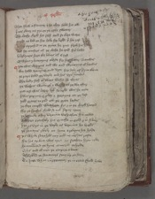Than flew a flauour þer-fro they felid hit ałł
þer nas odour ne yre on þe erthe swetter
236The clothe clerid hit-self and so clere waxe
Migħt no lad on hit loke for ligħt þat hit ӡaf
As hit aprochid to þe prince he put forth his hed
And for comfort of þe clothe he cried ful lowd
240lo lordyngis here the liknes of Cryst
Of whom y botenyng a-byde for his bittir woundis
¶ þan was wepyng and wo and wringyng of handis
wiþ lowd dremyng and dym for dole of hym alone
244þe pope valid þe vayle and his vysage touchid
The body setħ al about blessid he thries
þe waspis went al a-wey & al þe wo aftir
þat arst was lazer-lyk so ligħt was he neuere
248þer was pipyng & play & partyng at þe last
yeld graces to god ałł þe grete lordis
þe cloþe caugħt was hem fro & in þe chircħ hangid
For þe synful shold se tul soper tyme
252þe vernicle aftir veronica vaspasian hit callid
And gert greithely hit greithe in gold & in siluir
yet is vys in þe vayle as veronica hit brogħt
þe romayns rively at Rome a relique hit holde
256¶ þis while Nero had noy and no nightis reste
For his tribut was tynt as Nathan hym tolde
he comaundid þe kyng counceiłł to holde
Erlis and al men þe empire a-bout
260Assemblid þe senatours sone vp-on haste
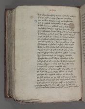And al þei demyd by dome þe dukis to wende
þat were curid in Crist þat þei on cros slowyn
264¶ þat on was vaspaӡian of þe wightis two
þat þat travaile vndurtoke and Titus þat oþer
A bold bierne on a blonk of his blood com??
No firþere sib to hym-self but his own sone
268Boþe were þei kyngis wiþ crowne þat crist mycħ lovid
þat had hem grauntid his grace & her grame distroyed
Most þei had hit in herte his hestis to kope
her forward to hold þat þei byfor made
272þan was rightyng in Rome & rubbyng of rust
Shiueryng of sheldis of sharp stele dressid
Toke her leve at her lord liftes vp her signe
A grete dragon of gold and ałł geyng aftir
276By þat shippis were shrowde & shift in þe depe
Trussid and tirid on toteryng wawes
Fresshe watir and wyne woundyn in sone
And stuff of al manere store þat hem strengþe shold
280þer were shippes on flote and farecostis many
Coggis and crayers castellid alle
And Galeys of grete mygħt wiþ goldyn vanys
þe brede of þe brood see a-bout . v . myle
284þei tyen vp topsaiłł whan þe tide askis
þei had þe birre on þe bak and þe bank laftyn
þei sailid ouere þe salt see with soudiours many
And ioynyd in-to port Iaff in Iudees londe
288¶ Sirrie Sesars londe þow mayst sorow euere
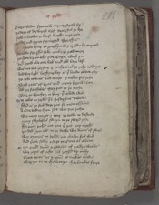Citees vndur syon now is ӡour sorow vp
þe deþe of derworth Crist dere shul ӡe bye
292Now is bedlem þi boost brogħt to þe ende
Ierusalem and Ierico for-iuggid wrecchis
Shal neuere kyng in ӡour kyn wiþ crown be anoyntid
Ne iewe for Iesusake iouke in ӡow more
296þei sette vp-on eche side Surrie with-yn
And brend euere atte bak and ałł bare left
was not but roryng & ruthe in al þe riche townys
And wiþ ligħt lasshyng ley al þe loude about ovir
300þei toke townes and touris & tieldis ful riche
Brost ӡatis of bras and meny borow wan
Ałł þe faitheles they fiłł to þe dethe
Boþe on benche & in bour þat a-bide wold
304¶ þe iewis to Ierusalem þere Iosephus dwellid
Fled as þe folk doþe þat fo-men assailitħ
A Cite vndur Syon set was ful riche
wiþ meny touret & tour þe town to defende
308Meny swykeful swayn to þe swerd ӡede
For peny passid not one þat þat pay mygħt
þei ded hem ałł to þe dethe wiþ dintis of swerd
wiþ gynnys to Ierusalem þei chasyn ful thik
312And sette sadly a sege þe Citee al a-bout
¶ þei pigħt doun a pavilon of pallyn webbis
wiþ ropis of riche silk reysid vp on hy
Grete tentis as a toun of turkies clothis
316
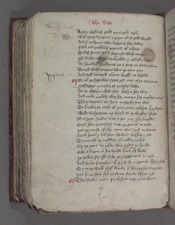A gay Egle of gold on a gylt apple
with grete dragons & grym al of gold wrogħt
And þer-to lyons two liggyng her vndur
320Pale and pavilon peyntid al a-bout
Ful of stonys stikid steynyd with army??
Of diuers colours to knowe & coueryd o-lofte
An hundrid stondyng on a stag on stedis about
324Tourid with touretis was þe tent þan
And setħ britagid about brigħt to byholde
¶ Or al þe sege was sette ӡet out of þe Cite come
Messagers y-made of Moyses lawe
328To þe chefteyn chefe they chesyn her way
And made mekely wiþ her mouþe her message at-onys
The Citezeins vs sent to serche ӡour wiłł
To knowe þe cause of ӡour come & what þat ӡe cleyme
332wold vaspaӡian no word to þe wights shewe
But sent sondis-men a-ӡen xij sikir knyghts
Gert hem greithely to go þe gomes to telle
þat þe cause of her come was crist to avenge
336Seith hem y bid hem be boun bisshop & ałł
To-morow or mydday al modur nakyd
vp þe ӡatis to ӡelde wiþ ӡerdis in honde
Eche a bierne in his breche with-owte oþer wede
340þe Iewis for Iesussake þe iuggement to take
And bring Cayphas þat Crist by iuggement cursidly slow
Or y to þe wałł shal wende & warpe hit to þe erþe
þat þer ne shal stik ne stone stonde whan y go
344
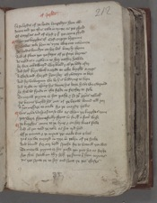þere þe lordis of þe londe lengedyn hem ałł
Anone told þei this tale in truþe as þei shold
Of Cayphas and of Crist & þat þei come shold
348¶ whan þes knyghtis of Crist carpyn bygunne
The iewes toke hem as tyte wiþ-out tale more
her hondis boundyn at her bak bittirly thenne
And of fluen þei þe faxe of þo faire bernes
352As nakid as a nedle in-to her nethir howve
her face enbawmyd wiþ blood & al þe body aftir
And setħ knyt with a corde to eche knygħt a corps
A Chese and chargid hem her Chyviteyn to bere
356And sey vnbuxum we be his biddyng to kepe
And drede no-thing his dome his deþe have we ordeynid
he shal vs fynde in the felde no ferther to seke
To-morow pryme or hit passe & so ӡour prins tellitħ
360þes biernes buskid hem out of þe borow bound ałł xij
A-yen message to make fro þe maystir Iewis
¶ was neuere vaspasian so wo as whan þe knyghtis come
þat were shamefully shent in sucħ a foul wyse
364¶ þe kynghtis come to þe kyng & on her knees falle
And al þei told þe tale as hit tyd had
Of þi manace & þi mynt þei make but a litil
þus are we turnyd in tyre in tokyn of þe sothe
368And bound for our bold speche for to bataiłł þei wiłł
To-morow pryme or hit passe þei put hit no ferþere
hit shal satiłł on thy-self þe same þou hem myntis
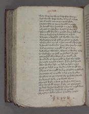 372wode wepyng wroþe vaspasian was þen
leyd wacche to þe walle & warnyd in haste
þat al manere men on þe morow sholde
Be sone aftir þe sonne semblid in þe felde
376he streyght vp a standard in a sterne wise
Byggid as Berfray bretful of wepyn
whan ogħt faylid in þe feld þat to þe figħt longid
Atte þe berfray to be botenyng to have
380A dragon is dressid and drawyn vp a-loft
wyde gapyng of gold þe gomes to shewe
with arwes armyd in his moutħ also he had
A faucon vndur his feet wiþ four kyn feþeres
384þer-of þe poyntis y-pigħt in parties foure
And of þat wantoun worme is wondur to here
In forbysyn to folk þe fawcon he held
þat þei had wiþ werre al þe world riche
388On a balle of brent gold þe brest was assisid
his tayle traylid a-doun þat turne shuld he neuere
whan he was lyft on loft þe lordis a-forn
Moost þei lokyd to þe lande tul hit laugħt were
392þer-by þe Cite mygħt se þat no saughtlyng shold rise
Ne entrete of no trewe tul þe Cite be ӡoldyn
Or ride on þe romaynes for þei have rede take
þere britnyd to be or þe borow wynne
396Britagid bigly a-bout þe berfray was þenne
wiþ tenefułł touris þat ovir þe Cite goggid
þe beest by his brightnes þe bernes mygħt kenne
Four myle þer-fro forsothe at þe leest
400
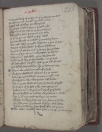with a eche a weef of þe wynde þat þe wynge touchid
On eche a pomel is pigħt pencels many
Of selk and of seluer semely arayed
404hit glitrid as glede-fyre in þe gold riche
Ovir al þe Citee to se as þe sonne bemys
A-for þe four yatis fourmyd þan to lye
lx Mille by somme while þe sege lastyd
408And sette wacche to þe wałł þat none a-wey went
was nogħt whil þe nygħt lastyd but neying of stedis
Steryng of stele wedis stuffyng of helmys
Armyng of Olyfauntis and oþir stronge bestis
412Aӡen þe cristyn to come wþ castels on bakkes
vaspaӡian in stele wede & his wightis alle
Digħt fortħ wiþ þe day drewyn to þe dale
Of Iosaphatħ þere Iesu shal Iuge ałł thinges
416And boldely bataylid hem þere to byde þes oþir
¶ Tytus toke þe vale to telle the sothe
wiþ sixty thowsand assignyd for þe nonys
And in þe myddilward as meny markid to be
420þere vaspasian was wiþ princis and dukes
And in þe rereward as meny so semely of sigħt
Sir Sabyn of Surrie a sikir man of armys
þere was a prins of province þat mych peple led
424Fourty hundrid on an hepe wiþ helmys to shewe
And . x . Mille in þe tayłł to kepe her tentis
her hors and her harneys from harmys to loke
By þat biernes in þe borow blewyn wel lowde
428And baners bedyn hem fortħ blis vs betyde
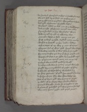An hundrid thousand on hors in hawberkis atirid
wiþ-out folk vp-on foot at þe four ӡatis
432þat presid out in þe playn wiþ paveys in honde
And xlv olyfauntis fensable bestis
wiþ brood castels on bak out of þe borow comyn
And on eche Olyfaunt armyd men many
436Nyne hundrid on hye wiþ hurdys wiþ-in
Twenty told by tale in eche tour evyn
Camelis closyd in stele comyn out þen
Fast toward þe felde deflicħ many nombre
440Buskid to bataiłł on her bakkis leddyn
Eche a torret of tre wiþ . x . men of armys
Charietis ful of choys folk chargid wiþ wepyn
A wondur noumbre þer was who-so se mygħt
444For meny doghty þat day þat were a-drad neuere
were found feye in þe felde by þat þe figħt endid
An Olyfaunt armyd come out at þe last
Coverid wiþ a castełł craftily wrogħt
448A tabernacle wiþ-in þe tour a-tirid was riche
Pigħt vp-on a pavilon of postis of siluir
A whicche of whit seluir walowid þer-in
On four geauntis of gold from ground þat hit bare
452A chosyn chayer þerby wiþ chaundelers xij
Bet al of brent gold wiþ brennyng serges
þe chekis of þe chayer were charboncles four
Couerid wiþ riche clothe þere Cayphas is set
456A plate of polisshid gold was put on his brest
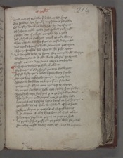lernyd men of þe lawe þat lowde cowde synge
wiþ sawters sete hym by þe psalmes þei redde
460Of doughty Dauid þe Duke & of his dere stories
Of Iosue þe noble Iewe & of Iudas þe knygħt
Cayfas out of a kyste caugħt vp a rolle
And rad how þe folk ran þurgħ þe rede watir
464whan pharao and his feris in þe flood drenchid
And mycħ of Moyses lawe he menyd þat tyme
whan þe faithles folk were to the feld comyn
And bataylid by-for þe bente wiþ many brigħt wepyn
468wiþ baners and brigħt wede & bestis en-armyd
Migħt no man se þe sonne ne þe Cite knowe
¶ vaspasian devisid þe vale al a-bout
wiþ baners al ovir-spred vn-to þe borow yatis
472he seyd lordynges a-lowd listenith my speche
here nys kyng ne knygħt comyn to þis place
Baron ne bachelere ne berne þat me folowis
þat þe cause of his come nys crist to avenge
476vp-on þes faitheles folk þat falsly hym slowyn
Byholdith to þe hethyng & to þe hard woundys
The byndyng and betyng þat he on body bode
lete neuere þes lawles ledis laugh at his harmys
480þat bogħt vs of bale with blood of his hert
I qwyte-clayme þe querels of al quyk bernys
And cleyme of euery kyng but of Crist alone
That þis peple to peyne no pite ne had
484As previth his passion þe pask who-so reditħ
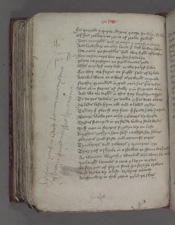his querele y quyte-clayme queþe hit wher hym likiþ
Of his robberie to rome of realte fallitħ
488Boþe þe mygħt and þe mayn & maystrie on erþe
And lord-ship on euery londe þat lith vndur hevyn
lete neuere þis faithles folk wiþ figħt of vs wyn
hors ne harneys but þei hit harde bye
492Plate ne puseyne ne pendauntis ende
whil eny lyf may last or we þe lyf have
For they are faynt at figħt fals of byleve
And wol wene at a weef al þe world to quelle
496Neithir groundyd in god ne in his grace tristyn
But al in sternes of stowr & in strengþe alone
And we are digħt in this day drightyn to serve
To do þes develis on dawe & his deþe avenge
500his ledis left hym ałł and a-lowd crydyn
To-day þat fleith eny foot þe fende have his soule
Bemys blewe þan on hy & baners vp brayde
Stedis stampid in þe stede vndur stele wedis
504Stiff men in stiropis strydyn vp-on loft
knyghtis crossyn hem-self cacchyn her helmys
Clarions cried faste and cornmuse pipes
Tymberers and taberers & trompers crye
508They yaf a shrike in a showte to shame wiþ þe iewis
As woman wepith & waylitħ whan watre he nei??
þei laugħt launces a-none & lepyn to-gidris
As fire out of flynt stone hit ferd hem bytwene
512Dust drove vp a-loft drivyng a-boute
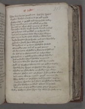They bare bernys þurgh-out brost her speris
knyghtis knelyd a-downe to þe cold erthe
516Fightyn fast in þe feld and ay þe fals vndur
Titus turnith a-none and tollith of þe best
Foriustid þe iolyest with ioynyng of werre
And sethin with a brigħt bronde betith on hard
520þat þe brayn and þe blood on þe bronde last
And seth in þe same stede wiþ a sore wepyn
Bete vp-on brown stele while þe blade lastid
An hie braydis he þe bronde and as a bore lokiþ
524hewith on hertly hent who-so wold
Ałł brightnes on þe bentis hew who-so wold
Of þe gildyn gere and of þe good stonys
Of shymeryng of sheldis & shynyng of helmys
528hit ferd as þe firmament on a fire were
¶ vaspasian in þe vale þe vaunward biholdis
how þe hethin hepid hedeles to ground
And come wiþ his feris þe fals for-to mete
532Rigħt as Gryffons wiþ grame þei girdyn to-gidir
Spedely her speris on sprottis thei sprungyn
Sheldis as shide-wode on shuldris þei clevyn
Swerdis shokyn out of sheþes þat sharp were groundin
536And mette wiþ þe metałł þurgħ mennys hert?s
They hewyn on þe hethyn and hurtelyn togidir
Forshore shroudis ful shene on shidring bernes
Bankis blowyn on blood a-bout in þe vale
540And out of gay goldyn gere gotris þere yedyn
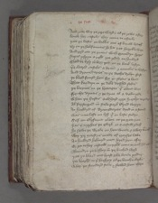And rode wiþ þe rereward & al þe rowt aftir
kenely her castels they come to assaile
544þat þe bestis on bakkis out of borow leditħ
vp-on þe holifauntis he hit þat horrible were
And gird out þe guttis with groundyn speris
Ropis rispyn a-rigħt þat redily an hundrid
548Shold be bysy to bery þat on þe bank lastyn
þere clatrid castels a-doun & camelis to-brostyn
And dromedaries to þe dethe drivyn fast
þe blood fomyd hem fro in flodis a-bout
552That kne-depe in þe dale dasshid stedis
þe biernes in þe bretages þat a-bout were
For the dyntis & þe dyne al a-down ӡede
whan þe hurdis and hard erþe hurtlyn to-gidir
556Al forstoppid in stele stark blynd wexyn
An hundrid of dromedaries dyed in a stound
was none left on lyf þat on loft stodyn
Saf an Olyfaunt a-lone at þe grete yate
560þer as Cayphas þe Clerk in a castełł riditħ
he sawe þe wrake on hem wende & a-wey turnitħ
wiþ xij Maistris made of Moyses lawe
An hundrid helmyd men hyed hem aftir
564Or þei to her castełł mygħt come to caccħ hem ałł
Boundyn þe bisshop in þe bicchid wyse
þat þe blood out brast eche bonde vndur
þei brogħt to þe berfrey al þe benche clerkis
568
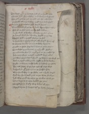The beest and þe britage and al þe brigħt gere
Cheyers and chaundelers and charbuncle stones
The rolle þat he rad on and ałł the riche bokis
572þei brogħt wiþ þe bisshop þogħ hym bale þogħt
¶ Anone þe faitheles folk faylid hertis
Turnyd toward þe toun And Tytus hem aftir
Fele of þe fals folk on the feld laftyn
576An hundrid of hethyn wiþ his hondis a-lone
he britnyd with his bronde & brogħt to þe deþe
The fals folk in þe feld flowyn so thik
As hayle from hevynward eche hepid from oþer
580So were þe bankis al a-bout blody by-runne
Myght no stede step doun but on stele wedis
Or on bestis or on biernes or on brigħt sheldis
þe multitude was so mycħ þat on þe mosse last
584þere so meny were marrid merveiłł were ellis
yet were þe romayns sound as whan þei ferst com
wele a-rayed eche renke nogħt a thing brostyn
Migħt no bierne on hem breke so boldely þei stode
588For nas segge of þe sege þat of sore wist
An hondrid Mille helmys on þe hethin side
were found fey in þe felde not o freke scapid
Saf vij thowsand þat to þe Cite flowyn
592And wiþ micħ wo wan þe wallis with-yn
ledis lepe to a-none lokkid þe ӡatis
Barrid hem bigly wiþ boltis of yryn
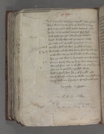 596And Portcolys with pynne pigħt to þe ground
They went vp wightly þe wallis to kepe
Fełł vnfoundid folk grete defence made
Tokyn in-to towris tunnys ful thyk
600with grete stonys ałł of grey marble
kepid kenely wiþ cast þe corners a-loft
Quattid out quarels quarters at ones
þe othir folk att foot fresshly assaylyn
604Tul eche a diche wiþ dewe was dankid a-bout
þo withdrowe þei fro þe diche dukis and oþir
For þe cast was so kene þat come fro þe wallis
Comyn forth wiþ þe kyng clene as þei ӡede
608wantyd hem not a wigħt not one þat harme h?
Princes to pavilons passyd swithe
And arayed hem þere & al þe nigħt restid
with wacche a-bout þe walle meny wigħt to soro?
612They wiłł not þe hethyn thus harmeles passe
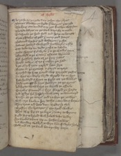
¶ As rathe as þe rede day rosyn the skyes
Bemes blewyn on brode & biernes gan rise
The kyng comaundid a cry þat knowyn was sone
616The dede bodyes on þe bank bare for-to make
To dispoyle þe spilt folk and spare no lenger
Grete giddelis of gold & meny good stonys
Bedis and brochis and besauntis riche
620helmes hewyd with gold hawberkis noble
Cast dede vp-on dede ruthe to byholde
Made weyes ful wyde & to þe wallis come
Assemblyd to þe Citee & assaute bygunne
624Folk fresshely fele at þe four yatis
Broght towris of tre þat takyn þei had
Ayen euerycħ yate yarkyd hem hye
Bygan at þe grettest a garyt to arere
628Graythid vp froþeground wiþ . xij grete postis
hit was wondurly wyde wrogħt vp-on hye
Fyve hundrid a frunt to fight at þe wallis
hardy men vp on hye hewyn at þe grecis
632And bygan with byrre þe borow to assaile
Quarellis flammyd in fyre flappid yn harde
And Arwys ful hastily with attir envenemyd
Taysin at þe touris and tachyn þe iewys
636with care kacchyn her dethe many kene bernis
They brent and bete doun byeldis so thik
Brostyn the bretages & the brood wallis
That wer big at þe birre & bittir to wynne
640Rigħt hie to byhold with holow dichis vndir
hye bankis a-bout vp-on bothe halves
And wondur wikkyd to wyn but if wylis help?
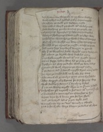 644And shettyn vp sharpely at þe shene wallys
with arwys and arblast & al þat harme mygħt
To affray þe folk þat defence made
The iewis werid þe wałł with wilis y-now
648hote boylyng picche among þe peple cast
Brennyng brymston & lede meny barelful
Shetyn shelmyng a-doun rigħt as shere watir
vaspasian went fro þe wałł & weried hem hard
652But oþer þan buskyd are boun & bentyn engynes
To cast at þe corners þe cursid caitifs to quelle
And meny dere daywerk dongyn to ground
By þat þe wrightis have wrogħt meny strong pale
656Ałł about þe borow with bastilis many
þat no freke mygħt found with-out fresshe harmys
Ne no segge vndur sonne from þe Cite passe
Sythyn fil they þe diche with þe dede bodies
660Crammyd with careyne þe corners vndur
þat þe steme and þe stencħ mygħt stynk ouere þe wallis
To core þe cursid folk to kecche her bane
The cours of þe condyt that come fro þe wellis
664They stoppyd euery streme þere eny spryng were
with stokkis & stonys & stynkyng bestes
þat þei no watir mygħt wyn in-to þe toun y-closid
¶ vaspasian þan turnitħ to his tent with tytus & oþere
668Commaundid a counceyl on Cayphas to syt
what deþe by her dome þat he dye shold
And þo lettrid ledis þat þei logħt had
Domysmen vp-on dees demedyn swithe
672
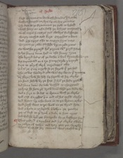Ferst on tentis to be with houndis y-drawe
Sethyn hongyd on hye vp-on hye galowis
The feet to þe firmament þe folk to byhold
676with hony on eche half þe bodyes anoyntid
with curris & cattys and clawys ful sharpe
Fourty cacchid and knyt Cayphas a-bout
And . xx . apys also to angryn hym more
680To rente þe rawe flesshe vp-on rede pecis
So was he pynyd from pryme with percyd sidis
Til þe sonne doun syed in the somer tyme
The lernyd ledis of þe lawe a litil bynethe
684Are turmentid on a tre & topsayle y-turnyd
knyt to euerycħ clerk curredoggis two
Til al þe Cite myght se þe sorow þat þei had
The iewis waltrid ouere wal for wo in þat tym?
688vij skore slow hem-self for sorow of her clerkis
þei hent hemself by þe here & from þe hede pulli?
And some doun for dole dasshid to the ground
þe kyng hem hete þan draw doun whan þei dede we??
692And a fire to be fet to brenne witħ þe clerkis
And cast Cayphas þer-in and al his cursid clerkis
And brent vp eche bone in-to þe broun askis
And seth went to þe wałł on þe wynd syde
696And a-brode in þe borow blewyn þe poudre
þer is dust to ӡour drink a duke to hem cryes
And bad hem byb þat beuerache for þe bisshops sou?
¶ Thus endyd Cayphas and his clerkis twelue
700In tokyn of treson and tray þat þei wrogħt
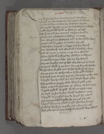By þat was þe day done dymmyd the skyes
Markyd þe mountaynes and mores al a-bout
704?oulis fallyn to fote her fetheris to reste
The nigħt wacche on þe wałł & waytis to blowe
Brigħt fyris and brood ar bette yn þe oost
The kyng and his counceil carpyn to-gidir
708Chosyn out chefeteins chydyn no more
But chargid þe chefteins and to her chambre went
kyngis and knyghtis to cacchin her rest
¶ Nvaspasian liggith in logge litil he slepitħ
712But walwitħ and wenditħ & walkith a-bout
And oft tyme in a tene on þe toun thenkis
whan shadow & shyre day sheddyn a-twynne
lauerokkis vpon loft lyft vp her steuys
716Bernes buskyd out of bed wiþ bemys ful loud
Boþe þan blew in þe bent & on þe borow wallis
vaspasian buskid out of bed bownyd hym faire
Fro þe foot to þe fronte in fyve gold clothis
720And setħ put on þat prince a-boue his pallyn wedis
A brigħt bye brondyd ful thik with a brest-plate
The grate on þe grey stele was of gold riche
Ther-ouer cast he a cote of colour of his armys
724A grete girdiłł of gold with-out gere more
he leyd on his lendis with lachettis many
A brigħt burnisshid bronde he gird hym about
Of pure polisshid gold the pomel and alle
728A brood shynyng sheld on his shuldre hongis
Bokelid witħ fyne gold cast a-bout his nek
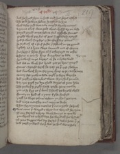And he hyed hym in hast and his hors askyd
732The gold hewyn helme he askyd in hye
witħ viser and ventaile auysid for the nonys
A croune al of clene gold was closid vp-on loft
Rayed round on þe helme ful of riche stones
736Pigħt with perlis of pris & proudely arayed
And so with Saphirs y-set the sidis a-bout
he stridith of a stif stede & strikitħ on þe ground
ligħtly as a lyon were launcid out of cheyne
740his seggis seyen hym al & eche seyd to other
This is a comly kyng knyghtis to lede
he bowith to þe barrers or he a-byde wold
And bet on with his brond þat þe bras ryngid
744Comes caytifs fortħ he crieþ þe þat crist slowyn
And knowitħ hym for your kyng or ӡe cacche more
ӡe may fet yow no fode þogħ ӡe feye worthe
And þogħ ӡe watirles wone wyn shul ӡe neuere
748A drope þogħ ye dye shold dayes of your lyve
The pale þat y pigħt have passe ӡe ne mowe
þat is so byg at þe bank & hatħ þe borow closid
Fourty to fend of a-yens fyve hundrid
752þogħ ӡe were ethnes eche on yn shal ӡe turne
And more manship it is mercy to seche
Than for-to marre meteles þer no mygħt helpitħ
¶ was none þat warpid o word but waytid her tyme
756If eny stertith a-stray with stonys to quelle
þan wrotħ as a wild bore he wenditħ his bridiłł
If ӡe as dogges wol dey he seyd þe devil have þat re???
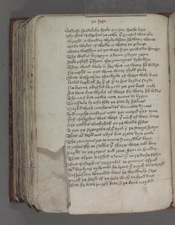 760And oft spedeloker speke or y ӡour speche here
By that Iosephus þe iewe þat gynful was euere
wrogħt a wondur wyle whan hem watir wantid
Made wedis of wolle in watir to plunge
764watir wesshyn as þei were & on þe wallis hongyn
The wedis droppyn a-doun & dryen yerne
Reke risith þer-from the romaynes byholdyn
They wend wele in her wit no watir hem wantyd
768Ne nogħt in þat wone watir shold faile
But vaspasian the wyle of werre wele knew
lowd lagħitħ he þer-of & to his lordis sayde
No bierne abasshid be þow þei þis boost make
772hit bene but wylis of werre for watir hem wantis
Tho nas but newe note anone to bygyn
To assaile by eche side þe Cite by halues
Markid with machenelles vnmette dyntes
776And myche masons note þei marrid þat tyme
þerof Iosephus was ware þat micħ of werre couþe
Set sakkis with chaf on þe walle sydes
A-yen þe strengthe of þe strok þer þe stonys hittyn
780That al derid not a dys but grete dyn made
The romayns ren to anone & on roddis knyt
Sythes for þe sakkis þat sharp were and kene
Ragħt to þe ropis and rent hem in Sundur
784That al þei dasshid a-doun & in þe diche fellyn
¶ But Iosephus þe gynful þe gynnys aspied
with boylyng oyle men he brente & mycħ bale wrogħt
vaspasian woundid was þere wondurly sore
788þurgħ þe hard of þe hele with an hond-dart
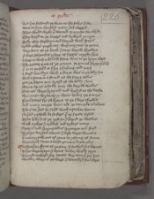And þer-to fastnyd þe foot to the folys syde
Sone to hym semblyd meny sad seggis
792That wold wreke þat wound or myche wo abyde
They brayd to þe barers and bykerid yn iryn
Felly they fogħtyn and foynid with speris
Iollid iewes þurgh-out with engynes by þenne
796were bent at þe bank & to þe borow threwyn
þer were selcouthis y-sene as segges mygħt sene
A bierne with a balow stone was to þe brayn clevid
The gretter pece of þe panne þe pomel forþe strikitħ
800þat in-to þe feld it flye a furlong and more
A bierd boundyn with a barne was in þe body hit
with a stone in a stound as the storie tellis
þat þe barne out brayd of the body clene
804Borne vp as a balle ouer the borow wallis
Biernes were braynid and brosyd to the dethe
wymmen wyde opyn went vndur þe stonys
Forcilettes fro þe front to þe flore thrillid
808And meny touret doun tilt þe temple al about
The Cite had be sesid witħ a-sawte thenne
Ne had þe folk be so fers þat þe fende servid
That killyd of þe cristyn & kepid þe wallis
812with arwes & arblast and archers many
Speris and spryngaldis sprongyn out hard
Dryvyn dartes a-doun & dele depe woundis
þat meny renke out of rome by restyng of sonne
816was mycħ leuer a leche þan eny layke ellis
¶ vaspasian stynt of þe stour & stowyd his bernes
That were betyn & brent vndur brigħt yryn
Turnyd toward her tentis wiþ tene þat þei had
820
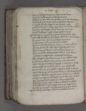helmys and hawberkis þei had of ful sone
lechis by ligħt torches lokyd her hurtis
wasshe þe woundis with wyne & with wolle stoppyn
824with oyle and with orisons ordeynid charmys
And setħ euerycħ a segge to þe souper yede
þogħ þe woundis were sore was none þat wo menyd
but dauncid doeles with denyng of pipes
828And with nakerers noyse al þe nightis tyme
¶ vaspasyan prayed þe princes & þe peple aftir
þat eche wigħt of the werre shold his wil shewe
For or þis toun be tane & al þes hie toures
832Miche traye and tene vs tydis a-byde
Than turnid he to Tytus & hym þe tale grauntid
Of the Citee and the sege to sey for hem alle
Than turnyd Titus and talkyng bygynnis
836Thus to laike with þe losse vs lent is þe wors
And this towrid toun is teneful to wynne
The worst in her wonys may in her wallis ligge
Strike doun witħ a stone stony meny knyghtis
840whan we shul hovere & byhold & litil harme wirche
Euere þe losse of þe layke shal on our-self ligħt
And now may þei ferke no ferther food to wynne
wold we stynt of our strif whil þei her store spendid
844we shul with hungre hem hent & holy hem shende
with-out wound oþer werke witħ wantyng of food
For þer as faillitħ þe fode þer is faynt strengthe
And ther as hungur is hote þe hertis are feble
848Alle assentid to þat segge þat to þe sege longid
The kyng is payed as þe prince & þe peple wold
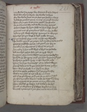Marchalles & Marcers for chaunce þat may happe
852with wacchis & wylis the wallis to kepe
For we wole hunt at þe hert þes hethis a-bout
And se þe racchis renne among þe rougħ bankis
They ridyn þen to þe riuer reysid vp foulis
856Se þe faucons fle and falle on her prayes
Eche a segge by hym-self as hym best semyd
Princes out of pauylons presid on her stedis
And turnyd with tarying þe touris to waytyn
860This lyf led þei longe & lord yeve vs ioye
¶ In rome hath Nero now myche noy wrogħt
To dethe pynid þe pope and myche peple quellid
Petre þe postelyn prince and Poul yet ther-to
864Seneke & þe Senatours & the Cite payrid
his modur & his mild wyf murthrid to þe dethe
And cumbrid cristyn fele þat on crist levyd
Romayns risyn anone whan þei þis ruþe herdyn
868To kylle þe Emperour quyk þat hem vnquemyd had
To brittyn þe bold kyng in the borow riche
The Cite & þe Senatours of on assent weryn
Non oþer dede is to do þei have his dome yoldyn
872Than fled þe freke it is ferly to here
Out at a prive posterne & al þe peple aftir
with a trunchon of tre toke he no more
Of al þe glowyng gold þat he on ground had
876On this trunchun wiþ his tethe he tuggitħ & bitiþ
Til it is pytte at þe point as a prikkis ende
Than abydith þe bierne and bitterly he seyd
To ałł þe wightis þat þer were wordis on hye
880
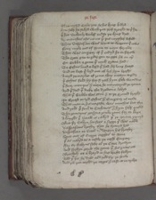Of no coysid Carle þat he his kyng killyd
hym-self he stikyd with þat staf streigħt to þe herte
þat hit vnclenly toclef and so þe kyng dyed
884vj . monthes after no mo þat þis myschef bifełł
That vaspasian was went to werre on þe iewis
Four myle out of Rome to myn for euere
That was emperour of þat endyd he in sorow
888The grete gan to-gidir gon to gete hem an-oþer
On Gabba a gome þat mycħ grame had
To Othus lucius a lord þat had hym long hatyd
And at last þe lord out of lyf hym brogħt
892A-myd þe market of rome they mettyn to-gidir
þer Othus feld hym fey & yaf hym fele woundis
þat four monþis & more he maynteynd þe croune
And þer died þat duke the dyademe levyd
896whan þat Gabba was gone & to þe ground brogħt
In Ernest entrid Othus & Emperour is made
That man in his mageste was monthis but thre
And yold þe soul to Sathanas & hym-self quellid
900The romayns reisyn a renke rome for-to kepe
A knygħt þat vitałł is callyd þat þe croune yemyd
But sir Sabyn hit sees a segge þat was noble
vaspasians brothir that he britnyd had
904vaspasian on vital to vengyn his brothir
Sent out of Surrye segges to Rome
þat as nakyd as a nedle þe new Emperour
For Sir Sabyns sake al þe Citee drowyn
908And sithyn gorid the gome þat his guttis ałł
Brothely at a brayd in his breche fallyn
And þus þere he died and ӡeld vp þe soule
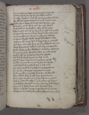 912vij monthes þe segge þe septre had in honde
And so lost he his lif for his lithir dedis
Anothir segge is to seche þe septre for-to have
For ałł þes grete are gone & neuere a-yen turne
916¶ Now of þis segge of Surry wol we sey more
how this comly kyng þat for crist werrid
hath hold on þe hethyn othir half yere
That neuere out of þe borow so bold is to passe
920As he to dyner on a day with dukys was set
Come renkys out of rome respyng swithe
In brenie brigħt wede with bodeword newe
lowtyn ałł to þe lord & lettris hym raugħt
924And seyn Comely kyng þe knygħthood of rome
with Senatours assent and al þe Citee ellis
have chose þe her chefeteyn to be her chef lord
As ӡe may se by the sele assay if ӡow likitħ
928þe lord left vp þe leef þe lettris to byholde
And lokith euerycħ lyne til þe last ende
Bordis borne were doun & þe berne risitħ
Callid counceiłł a-none kythid his speche
932ye be bernis of my blood þat y best love
My sone is sib to my-self & our seggisman
Sir Sabyn of Surrie a segge þat y trust
how myght y my-self saue if y so wrogħt
936For y have holy higħt here for-to lenge
Til y this tourid toun have take at my wiłł
And þe yatis be yevyn and yoldyn þe keyes
And sithyn hongyd on hye þat þe hold kepyn
940Brent & broke doun þes britages hye
That neiþer stik nor stone shal stond vp-on oþir
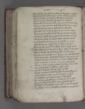For y wole worche by þi wiłł if wurship it folow
944The knygħt knelyd a-none and to the kyng sayde
we be wightis þe witħ þi worship to willyn
Of long tyme by-laft thi lege-men echone
That we done is þi dede may no man deme oþir
948The dome demyd was þer þat who-so doþ by an-oþir
Shal be souereyn hym-self set by the dede
Betake titus þi sone this toun now to kepe
And to þe doughty duke domycian his brothir
952And here y hold vp my hond with ӡow for-to lenge
with al þe help þat y have whil my lif lastitħ
And þou shalt ride to rome & receyve þe croune
And Emperour now to be as the is happid
956So may þe couenaunt be kept þat þou to cryst made
Thy-self dost þat thyn do & thyn assente worchyn
Than with a lyons loke he left vp his eyen
To Tytus turnitħ a-non & hym þe tale shewitħ
960And as sir Sabyn hatħ seyd he hym sone grauntis
witħ his broþere and bernes þat hym blesse woldyn
I shal tarie at þis toun tul y hit take have
weyes made þurgħ þe wałł for waynes & cartis
964Our other hestis to hold if y hele have
Or ellis britnyd to be if y hens passe
A book on a brood sheld brogħt was to swere on
Bernes bede to her hondis barons to kisse
968To be lele to þe lord þat hem lede shold
To tytus þe trew kyng tul þei þe toun had
Fayn as foul of þe day was þe freke thenne
he kissid þe knygħtis a-none with comelicħ wordis
972
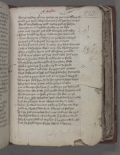For þe tresour of my trouþe on þis toun hongitħ
I nold þis toun were vntane & al þes hye touris
For al þe glowyng gold vndur god of hevyn
976Ne no stone in no stede stondyng on loft
But ouir-turnyd and tild temple and othir
¶ Thus lacchid þe kyng leve at his ledis ałł
went wepyng a-wey & on þe wallis waytid
980Prayeth god as he gotħ hem grace to sende
To help þat þei hit have & neuer her hertis chaunge
Now is vaspasyan went ouir the wild stremys
Evyn entrid to Rome and Emperour y-made
984And Tytus of þat tydyng hath take sucħ a ioy
That in synwis sodenly a sikenes is falle
The freke for þe faynhode of his fadir blisse
with a craumpe & a cold cagħt is so harde
988That þe festis and feet fyngrys and ioyntis
were lithe as a leef and lost have her strengthe
he crokyd a-yens kynd and as a crepil wexid
whan þei saw hym so by-set meny a segge wept
992They sent to þe Citee and soughtyn a leche
þat coude cure the kyng & conduyt þei deliuerid
whan þei the Citee had sogħt with seggis y-now
Fynd can þei no freke þat on the feet couþe
996Saf hym-self Iosephus þat surgean was noble
And he grauntyd to go the gome for-to hele
¶ whan he was come to þe kyng & al þe cas wist
how þe segge sodenly in sikenes is fallyn
1000Til he had complete his cure conduyt he axid
For what berne of þe borow þat he bring wold
The kyng is glad al to graunt þat þe gome wilnitħ
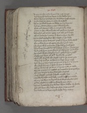 1004A man to the mody kyng þat he most hatyd
And bringith bysily þe berne to his beddis syde
¶ whan Tytus þe segge sey so sodeynly with sigħt
In his hert an hete so sodenly arisetħ
1008That þe blood bygan to blede in his veynes
And þe rode to restore in his owne kynde
Fete and feturis eche on as þei a-for were
Come to her owne kynde and þe kyng a-risetħ
1012Thonkyd god of his grace and the good leche
Of al save his enemy þat was to hym brogħt
Than seyd Iosephus this segge is þe leche
And bote of þi bittirnes þogh þou hym bale wold
1016For graunte hym thi grace for his good dede
Be fayn with þi foman þat frendship hatħ servid
The kyng saughtlis with þat segge þat hym savid had
And yaf hym grace for-to go wher hym good likyd
1020he ioyed with Iosephus and iewels hym ragħt
Besantis byes of gold brochis & rynges
But ałł forsoke the segge and to þe Citee yede
wiþ saf condyt as he come kept he no more
1024And Tytus segis þan þe toune þer tene is in honde
For hard hungir & hete þat hem is byfalle
Of þe tene & of þe toun is tyme now to telle
what moreyn & meschef for meteles þer is growyn
1028Fourty dayes a-fore bote þei ne had
Neþer flessh ne fissh þat freke might bye
Brede brothe neiþer befe ne thing vp-on erthe
watir ne wyn to drynk but wepe for hem-self
1032Olde scheldis & schone sharply þei etyn
That lyvelode for ladies was lither to chewe
þei fil doun for defaute flat to þe ground
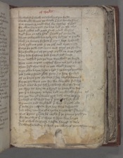 1036wo wakyd þer-witħ as woluys þei ferde
The wigħt wyries þe wayke & his wombe fillis
One Marion a myld wyf for myschef of food
her owne barne þat she bare bred on the colis
1040Rostyd rybbis and rigge with rulicħ wordis
Seyd sone on eche syde sorow ys on honde
A-bout þe borow batayle our bodyes to quelle
with-yn hungir so hote þat myn hert brestitħ
1044Now yeld me þat y þe ӡaf and a-yen turne
Entre þere þow out come and etys þe shuldir
The smelle ros of þe roost rigħt in-to þe strete
Ther fele fastyng folk fastyd had longe
1048doun dasshid þei þe dore dye shold þe bierde
That mete in þat meschef from men had y-kepid
Than seyd this wif in þat wood hungur
Myn own barne have y bred & þe bonys gnawyn
1052yet have y savid yow some & a syde fecchyd
Of þe barne þat she bare & her blood chaungid
Forþe þei went þan for wo wepyng ful sore
& seyd alas in þis lyf how long shul we dure
1056yet were vs betir at a brayd in bataiłł to dey
þan þus in langour to lyve and mycħ lasse pyne
þan þei demyd a dome þat dole was to here
To voyd al with wild deþ þat vita...s distroyed
1060wymmen and wirk folk þat were in grete elde
þat stode yn no stede but her store dispendid
And aftir touchin of a trewe a trete with þe lordis
¶ But Tytus graunte hem nogħt þat þe gomys þoghtyn
1064For he is wys þat is ware or hym woo happe
And is witħ falshede a-felde fairest to dele
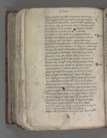Tytus wold no trews to þe toun grauntyn
1068with masons and mynours to myne þei bygan
And grubbyd fast vndur ground god yeve vs ioy
¶ As tytus aftir on a tyme a-bout þe toun ridis
with speris lx. of þe sege & seggis a fewe
1072Al a-wey fro þe oost out of a Cave
A busshement vp brak al of white helmys
Fyve hundrid fightyng folk & fil hym a-bout
In Iipons and iambews iewes þei were
1076That had wrogħt hem a-wey & þe wałł mynyd
And Tytus turnith hem to wiþ-out tale more
Shaftis shyverid were sone & sheldis y-thrillid
Many segge þurgħ shet with þe sharp ende
1080Biernes & brigħt wede blody byronne
& meny segge at þat sawte sogħt to þe ground
hewyn vp-an hard stele with an herty wille
That þe fire out flew as of flynt-stonys
1084Of the helme & hedis hewyn at onys
þe ӡung duke domycian of this dyn herd
And yssued out of þe oost wiþ viij. C speris
And falliþ on þe fals folk & fellitħ hem sone
1088As bestis britnys hem ałł & his broþer helpis
¶ Than tytus toward his tent turnith hym sone
Makith mynou?s and men þe for-to stop
And þan profreth he pees for pite þat he had
1092whan he wist of her wo þat weryn with-yn
But Iosephus þe gynful þat þe iewis led
And Symond at his assent forsoke þe profre
They seyd lenge in þat lyf leuer hem were
1096þan eny renk out of rome reioysid her sorow
Sale in þe cite was sesid by thenne
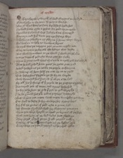For a ferthing wortħ of food floreyns an hundrid
1100Princis profre in the toun to pay in the fist
But al was boteles bale for who-so brede had
Ne wold have gyve a gobet for gold vp-on erthe
Females falowyd fast & al the face chaungyd
1104Fayntyn and fal doun þat ere so faire were
Swownyn swellyn as swyne & some swart wexin
Ful lene on to loke as lanterne hornes
So mycħ was þe moreyne þat no man mygħt telle
1108wher to birie in þe borow the bodies that deyde
But with hym went to þe wałł & waltryn hem ouere
In-to þe depe of þe diche doun gan þei falle
¶ whan Tytus told was this tale to trew god he vowyd
1112That he had profrid hem pees he grete pite had
he bad Iosophus þe iewe þe peple enfourme
In savyng of hem-self þe cite vp to to yeld
But Iosephus forsoke þo so for-to wirche
1116with Symond his seruant þat al þe Cite lad
For ałł his preching of þe peple at þe posterne yates
Ten turnid out of toun and tytus bysechid
To foryeve hem þe gilt þat þei to god wrogħt
1120& he hem grauntid his grace and to gaylers bytaugħt
But whan þei mette with mete vnmigħty þei were
Eny food to defie so feynt were her strengthes
For ful þe guttis of gold eche a gome had
1124lest fomen fynd hem shold her floreyns þei etyn
whan þei were brogħt on brood þe bernes of þe sege
with-out leve of þe lord ledis hem slewyn
They gorid euerycħ gome & ałł þe gold tokyn
1128Fayner of þe floreyns þan of þe frekis alle
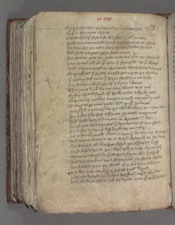So long set was þe sege tul þei þe Citee had
xj C Mille in the mene while
1132Swelt whil þe sege last with swerd & with hungir
¶ Now titus counceiłł hath take þe toun to assaile
To wyn hit on eche way of werlawis hondis
And pite ne pees profre hem more
1136Ne gome þat he gete may his grace ne wynnitħ
þan armyd hem al þat tyde & streigħt to þe werre
And evyn turnyd to the toun with trumpis & pipis
wiþ nakres & grete noyse þei ny to þe wallis
1140þer meny stif men & store stondyn on loft
Sir Sabyn of Surry of a Syde went
The ӡung duk domycian went to a-noþer
Fyfty thowsand of folk eche a freke had
1144wiþ meny manere engyne and mynours y-now
Titus to þe toun yede with . x . Mille helmys
Markyd mynours in þe wałł wher þei myne shold
On eche side for assaute settith engynes
1148And bold braynid men in britages hye
was not but dyngis & dyntis as al dye shold
So eche lyvyng lyf leyd vp-on othir
At eche kernełł was a crie & kecchyng of wepyn
1152And meny berins at a brayd braynid to þe deþe
Sir Sabyn of Surrye whil þe assaute last
leyd a laddre to þe wal and a-loft clymbitħ
wynnis wightly þer-on þey hym wo happid
1156And vp stondis on a stone al yn stele wede
he slow six on þe wałł Sir Sabyn allone
þe vij. hit on hym a hydous dynt
þat þe brayd onte the brayn at his nose-thrillis
1160
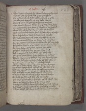¶ Than Tytus wepith for wo and warieth þe stound
Seth he þat lyf hath lost þat he lyve shold
For now is a duke dede þe doughtyest y trowe
1164þat euere stede bystrode or eny stele werid
Than Tytus on þat Syde settith engyne
wele wrogħt for þe werre & to þe wałł dryvitħ
þat ouere-walt þer hit hent & wyghtis an hundrid
1168were dede of his dynt & in þe diche dasshid
¶ Than tytus hevith vp his hond & hevyn kyng thonkys
That he sir Sabyns deth so dere hath a-bogħt
The iewes prayen of pees to passe fro pyne
1172And to þe comlicħ kyng þe keyes out raughtyn
Nay Traytours quod Tytus now take hem ӡour-self
For shal no warde of þe wałł vs þe way lette
we haue hotyn vs gate aӡens your wiłł
1176þat shal satiłł ful sour on ӡour sory kynd
And or þe ӡatis were ӡoldyn þre ӡeer afor
Ovir þe Citee were sene selcouþe sightis
A bright brennyng swerd ouir þe borow hongid
1180wiþ-out holdyng or help safe of hem allone
Armyd men in þe eyr in þe best wise
Ouere þe Citee were sene in sundry tymys
A Calf al a-gayn kynd caluyd in the temple
1184And þer yeuyd an ewe at offryng tyme
Also a wigħt on þe wałł cryed wel hie
And seyd wo wo wo worthe to ӡow bothe
To setle Ierusalem and the ioly temple
1188yet seyd þe wigħt on þe wałł þis ilk word more
wo to þis worthy wone & wo to my-self
And dyed whan he done had wiþ dynt of a slyng
And was in hast had a-wey how wist y neuerr
1192
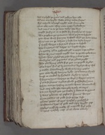And vpheld þe yatis and yeld yn hem alle
with-out eny brigħt wede al bare to her shertis
From morow til merk nygħt cecid they neuere
1196But euere man aftir man mercy by-soghtyn
And titus in-to þe toun takis the wey
Migħt he stynt in no stede for stynkyng of corces
The peple in þe pament was pyte to byhold
1200þat was with famyne defetid whan þei fode wantid
was not on þe likham y-laft but dede bonys
þat fressh weryn a-fore and fayre to byhold
The burgeys with belyes as barels byfor
1204No gretter þan a grehound þan to gripe in þe myddis
Than Tytus taried nogħt but to þe temple went
That was raylid þe rofe wiþ rubies grete
with perlis and peritottis al þe place pigħt
1208The glowyng glede-fire þat on þe gold strikis
The doris ful of dyamaundis dryvyn were thik
y-made merveillously with mariorye perlis
þat euere witħ lemyng ligħt as a laump shynid
1212durst no candel be kyndelid clerkis to areyse
The romayns waytyn þe werk & weryen þe tyme
þat euere so precious a place shuld perisshe for synne
Than out þe tresour to take Titus commaunditħ
1216And ouir-tilt the temple tytly at onys
A-doun brayd þei þe bielde & bete it to ground
þer was plente of perlis & precious stonys
Grete gaddis of gold ho-so grype lest
1220Platis pecis of pris vessel y-polisshid
Besauntis byes of gold and oþir brigħt gere
Pylers massyly made of metałł ful riche
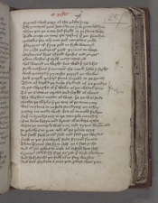 1224Peyntid with perry al the place ouer
The romayns rent hem a-doun & to rome leddyn
whan þei þe Citee had sogħt in þe same wise
Telle couþe no tung þe tresour þat þei foundyn
1228Iewellis for ioly men and iemewis riche
Floreyns of fyne gold no freke wantyd
Ne riche pelure of pałł princis to were
Besauntis byes of gold brochis and ringes
1232Clene clothis of sylk meny cartfułł
wel wantid no wigħt but weld þat hem likyd
¶ Now masons & moneours the moold have y-sogħt
with poncys & pycoysis percyd þe wallis
1236hew þurgħ þe hard stone hurtlid to þe ground
That al derkid þe diche for dust of þe poudre
So þei wrogħt al þe walle al þe wlank tyme
Til þe Citee is cerclid and sogħt al about
1240The wightis made al wast þere þe wal stode
Bothe þe temple & þe tour al þe toun ouir
was no stone in no stede stondyng on other
Morter ne made wałł but al to mold fallyn
1244Neþer in tymbre nor in tre temple ne other
But doun betyn and brent al to bare erthe
whan þe temple was ouir-tilt tytus commaunndid
In plowis to put and al þe place erye
1248And setħ sew it with salt and seid þes wordis
¶ Now is þis stallwortħ stede stroyed for euere
Than Tytus set hym-self on a sete riche
And al þe iewis to iuge as iustise hym-self
1252Cryours callid hym forþ as þei þat Crist slowyn
And he fraynid þe folk al in fair wordis
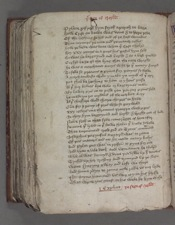Pylate profritħ hym fortħ aperith at barre
1256how Crist on dawe was done & to deþe þede
Of the hething he had and of þe hard woundis
¶ Than mynnys þe man and þe maner tellis
how þe dede was done whan þat Crist tholyd
1260For .xxx. penys in a purs his postil hym sold
So was he bargaynid and boght & as a best quellid
Cursyd be he quod the kyng that the cate wrogħt
he was a marchaunt a-mys whan he þat money fongid
1264To selle so precious a prince for penyes so fewe
A Marchaundise wole y make yn mynd of þat oþir
þat shal be hething to hem or y hens passe
Al þat her bodies bye wole or bargaynes make
1268By lower pris on to passe þan þei our prins sold
he made yn þe myddis of the market a cry
Al þat chaffare wold chepe chepes to have
Euere for o peny of pris who-so pay wold
1272xxx iewys on a thromme þrongyn with ropis
So they hym bargeynid and bogħt & brogħt out of londe
Neuere setħ in that syde come segge of hem aftir
Ne none þat lyvid in þat lawe shal in þat londe dwelle
1276That turmentid trew god so Tytus commaundid
Iosephus þe gynful a-iornyd was to rome
Of þes maters and mo he made many bokys
And Pylat put was in prison to pyne for euere
1280And vyan a vile detħ and veniaunce he tholyd
whan al was demyd & done þei drwe vp her tentis
Trussid vp her tresour and trumpid vp þe sege
went syngyng a-wey and left wo there
1284And home ridyn to rome now rede vs our lorde
IesuIoyne hem and vs wiþ ioy in his blysse
That wrote þis geest to his wele he hym wisse
Explicitþe sege of Ierusalem .